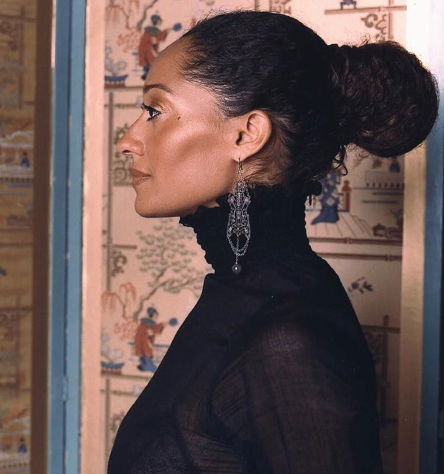
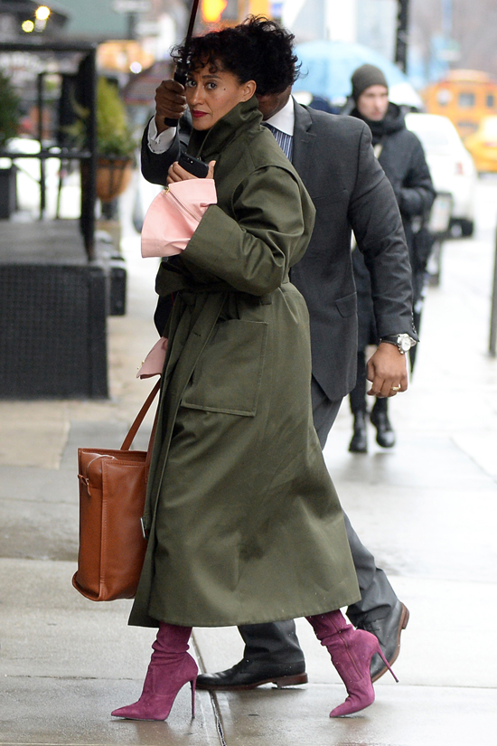
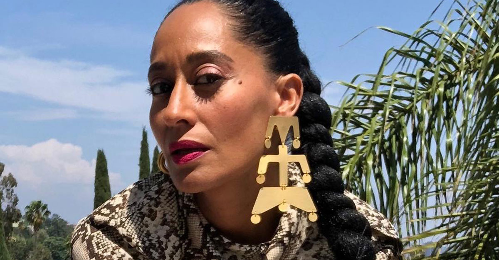
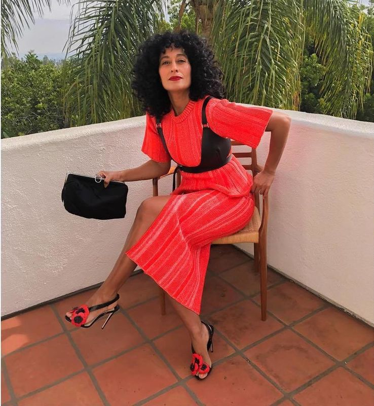
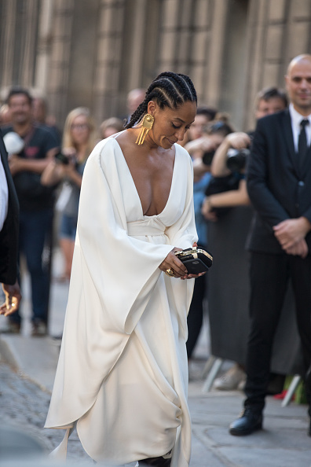
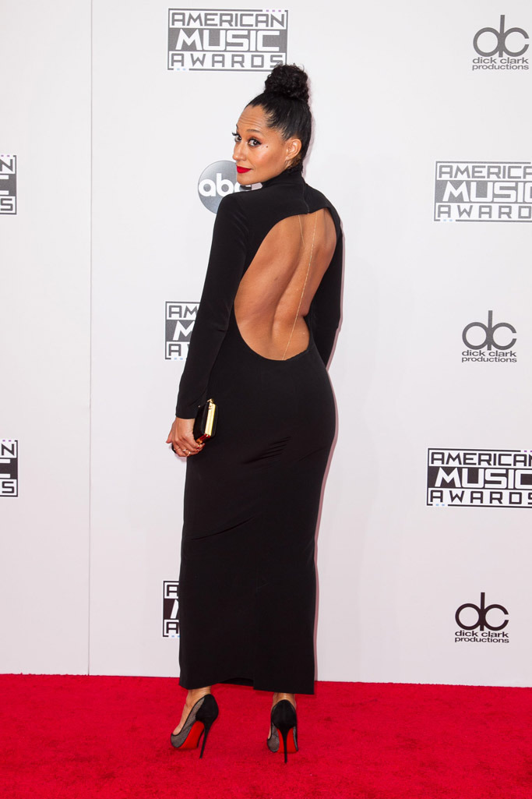
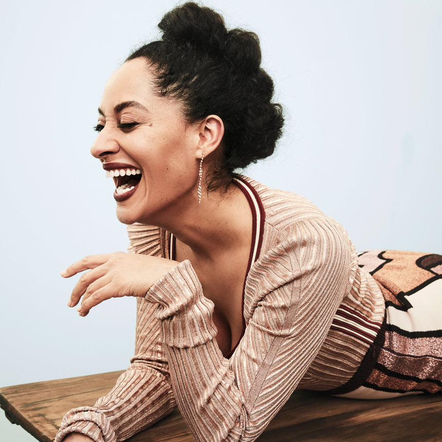
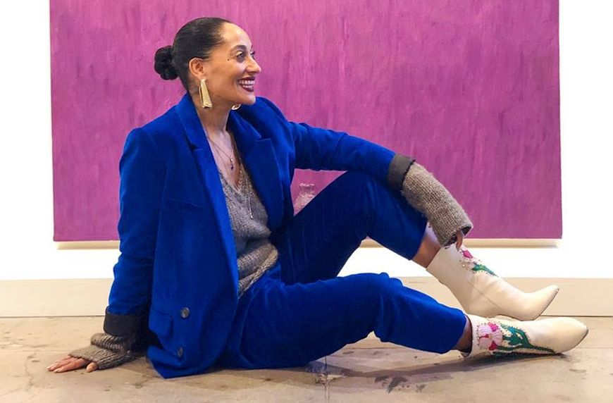
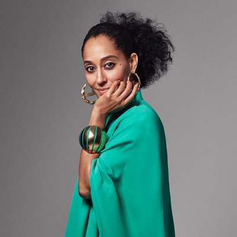

Tracee
Ellis
Ross
Tracee Ellis Ross may be well known for her leading role in 2000's sitcom comedy Girlfriends and more recently in Blackish but this this tribute page will focus mostly on her fashion sense.
Increasingly Tracee has gained more and more attention for her style, perpetuating her to style icon status. She has appeared in various fashion articles and has been photographed both professionally for fashion magazines and candidly for us to obssess over her style.

Profile image of Tracee Ellis Ross sourced from pinterest
Style
Tribute
Something About Tracee...
Tracee Ellis Ross always seems look effortlessly fashionable, on first
glance what would appear mismatched seems to come together to create the perfert fashion ensemble. Which leaves us asking how
did she make that work? It seems she has an innate sense of style, which is not suprising as she is the daughter of music and
fashion diva Diana Ross.
Tracee attended school in New York and Switzerland and sajourned in Paris.
This manifests in her sense of style as she has the perfect 'mash-up' of New York urban, European chic.
Tracee beacame a model in her teens introducing her to the fashion world early on. She later went on to become a contributing fashion editor to numerous fashion magazines before pursuing her acting career.
Tracee beacame a model in her teens introducing her to the fashion world early on. She later went on to become a contributing fashion editor to numerous fashion magazines before pursuing her acting career.
More recently Tracee added TED Talk presenter to the many knotches under her belt, where she dicusses inequalities towards women. Please click here to watch.
Brutally honest and bold Tracee has not been shy in coming forward about her insecuriites and tends to wear her heart on her sleeve. On one occasion she was quoted as saying
I am learning every day to allow the space between where I am and where I want to be to inspire me and not terrify me.about her career. She has also been quoted as prolifically saying
Wisdom means to choose now what will make sense later.
All elements of Tracee's personality tends to be reflected in her style
I have a big personality, so I like clothing that also has a big personality.
This is shown in her love for bright bold vibrant colours and big bold statement
jewlery pieces. Unafraid to go beyond the trend and at times a little quirky Tracee has become a staple fashion figure
for women of different backgrounds and ages and is regularly seen in candids on pinterest and various fashion blogs.
To get a better look at Tracee's style you can click here for her instagram page.
So where does Tracee Ellis Ross get her fashion inspiration from? In W magazine July 2017 Tracee sited Katharine Hepburn,
Nina Simone, Diana Ross, Cher, and Bette Midler as her style icons and mentioned that she drew fashion inspiration from her
environment. Tracee would gain inspiration from anything as small as a flower that she would see in passing. That's not to say that
she does not get a helping hand from celebrity stylist Karla Welch for the bigger more elaborate occasions involving the red carpet.
Tracee is no stranger to designer fashion houses, and has forged ongoing connections with them to the point were she collaborated with JC Penny (a clothing store in the U.S) to launch her own fashion line. In true Tracee style she wanted to ensure that the fashion line was inclusive to all women.
I really believe that style and looking great does not have to expensive, and I really believe that women are beautiful in all shapes, colors, sizes, and ages. It was really important for me to design a collection of clothes that can be both your armor and your joy at the same time.. (By Tanisha Pina Nov 9, 2017,www.racked.com). It is an exciting time to watch what Tracee will come up with next, but until then we are happy to just take in all of that fashion goodness from her candid photos on the fashion blogs and on her instagram page.
Wisdom means to choose now what will make sense later.
Style Gallery







